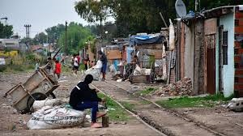
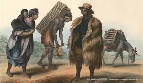

Ultimas noticias

Tipos de desigualdad
En Mexico actualmente existen multiples tipos de desigualdad, incluyendo las mas comunes a nivle global, las cuales serian le desigualdad de genero, la desigualdad economica, la desigualdad de oportunidads,etc.
En la epoca moderna de Mexico, se ha desarrollado en muchas facetas esta desigualdad, causando no solo conflictos internos, sino tambien conflictos externos que afectan de forma negativa la vida de las y los Mexicanos, genera no solo conflictos verbales, tambien genera conflictos fisicos y hasta regionales, causados especificamente por esta desigualdad general en Mexico y que actualmente esta normalizada en la vida cotidiana de cada Mexicano.
El propio gobierno ha normalizado de forma bastante preocupante, peus al parecer lo que el gobierno quiere es generar caos atraves de esta desigualdad para implementar cambios en la politica nacional sin que los propios Mexicanos se den cuenta.
La desigualdad en Mexico genera violencia y esta violencia se normaliza de forma preocupante en la crianza y auqnue actualmente hay una busqueda para cambiar eso, no esta cuasando mucho reusltado debido a que a nadie de los altos mandos, los mas ricos y poderosos no les conviene que cambie esta situacion, dejando un sesgo social entre ricos y pobres, dejando solo un grupo muy reducido de personas que puede crecer para no inestabilizar la estructura social actual.

El Origen y Principal desarrollo de la Desigualdad
La desigualdad (economica y social) en Mexico se refiere a la distribucion inequitativa de recursos, ingresos, riqueza, oportunidades y derechos entre diferentes grupos de la poblacion. Se manifiesta en brechas de ingresos , acceso a educacion, salud, empleo de calidad y posiciones de poder.
Las raices de la desigualdad en Mexico son muy profundas y llegan a remontarse principalmente hasta la epoca colonial (siglos XVI-XVIII), aunque algunos debaten su intensidad exacta:
La conquista extranjera establecio instituciones como la ENCOMIENDA, REPARTIMIENTO y HACIENDAS, que concentraron la tierra, la riqueza y el poder en manos de una elite criola y peninsular, mientras explotaban mano de obra indigena y africana, mas tarde en la epoca de la independencia (1821), las elites criollas mantuvieron y profundizaron estas estructuras. Aprovechando el caos que habia en ese momento como la inestabilidad politica, guerras civiles y la debilidad del Estado impidieron reformas redistributivas efectivas y asi la concentracion de tierras continuo.
Despues en el Porfiriato (1876-1910) que fue en la epoca de la Modernizacion economica con fuerte inversion extranjera y exportacion en materias primas, pero con gran concentracion de riqueza, la desigualdad aumento significativamente dyrante la BELLE EPOQUE.
No fue hasta la Revolucion Mexicana (1910-1920) que se intento corregir esto, mediante reformas agrarias y mayor intervencion estatal, logrando cierta reduccion temporal de la desigualdad. Apartir del siglo XX y XXI el modelo de desarrollo (sustitucion de importaciones, luego el neoliberalismo desde los 80) genero periodos de reduccion y aumento. Crisis economicas (1982, 1994), pertura comercial y politicas fiscales poco progresivas han mantenido altos los niveles de desigualdad.
La desigualdad en 2026 sigue siendo extrema y persistente. El 10% mas rico del mundo captura al rededor del 53% de los ingresos globales y posee cerca del 75-76% de la riquea total, mientras que el 505 mas pobre recibe solo el 8-9% de los ingresos y apenas el 2% de la riqueza.
La causas principales son el sistema financiero y fiscal global que favorecen la concentracion de capital (herencias, evasion fiscal, priviliegios de los ricos), el acceso desigual a la educacion de calidad, a empleo estable y oportunidades (incluyendo brechas de genero y territoriales).
Tambien afecta la globalizacion y el desarrollo de nuevas tecnologias, ya que generan beneficios capturados desproporcionadamente por elites, junto con desregulacion laboral y poder politico de los mas ricos, eso sumado a la herencia colonial, discriminacion y fallos en politicas redistributivas solop generan a su vez mas caos y discriinacion no solo en Mexico, sino a nivel global.
Posibles Soluciones.
Se puede solucionar con una fiscalidad progresiva, es decir, impuestos mas altos a grandes fortunas, herencias y ganancieas de capital, junto con la lucha contra la evasion fiscal, tambien habria que invertir de forma social, brindar acceso universal a la educacion de calidad, salud, proteccion politica; politicas de empleo decente y salarios dignos.
Otras podrian ser las pliticas predistributivas al regular los mercados, mejorar la igualdad de oportunidades y reduccion de brechas de genero y territoriales y mejorar la cooperacion internacional, usando la base del comercio justo para reflejarla en la regulacion financiera y alinearla con los ODS (especialmente con los ODS 10),
La desigualdad no es inevitable: es resultado de desiciones politicas y se puede revertir con una voluntad colectiva, ferrea y resiliente, si no nos esforzamos todos por resolver este enorme problema, entonces la sociedad se vera estancada no solo en este problema, sino en todos los aaspectos negativos que deben ser reducidos hasta que no generen ningun peligro masivo o importante a la sociedad.